Synchronized projects consist of files that are mirrored on the local system as well as on one or more remote systems. Editing occurs locally and each file is synchronized with the currently active remote system when it is changed, created, or deleted. This enables faster interaction with the files and editor, more CDT editor features since the files are local, and continued interaction for editing etc. if the network connection is lost.
To host a synchronized project, the remote system must support the Git distributed version control system. Note that this is completely independent of using Git for source code control.
To create a new Synchronized Project, first select an appropriate wizard:
Select File > New > Other... then in the wizard selection dialog, select Remote > Synchronized C/C++ Project or Synchronized Fortran Project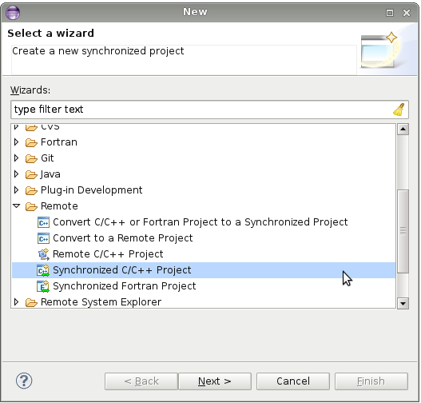
Or, from the context menu (right-mouse) in the Project Explorer of the C/C++ Perspective, select New > Synchronized C/C++ Project or Synchronized Fortran Project
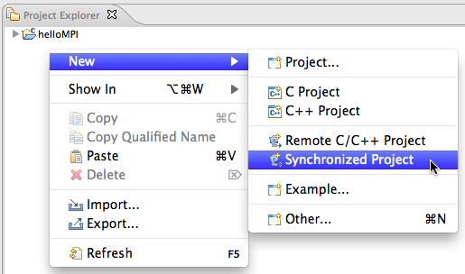
Now fill out the New Synchronized Project dialog shown.
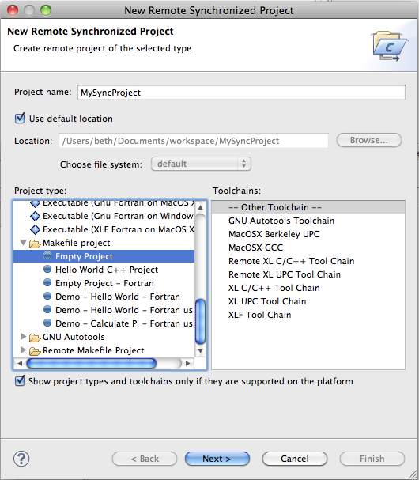
File filtering specifies which files will be synchronized between the local machine and the remote target.
The default can be altered for this new project
via the Modify File Filtering... button. By default, eclipse-related files such as .project
are not synchronized between the local and the remote system. Binary files are.
See File Filtering
for more information. See Sync Preferences for information on how to modify the default behavior
for subsequent new synchronized projects.
At this point you may select Finish to complete project setup with defaults for the remainder of the options.
Alternatively, you may select Next to scroll through the remaining pages, which differ based on the selected project types and toolchains. This includes the configuration page, which will list a separate build configuration for each toolchain selected earlier.
If you then select Next > instead of Finish, the Default Build Configurations page appears.
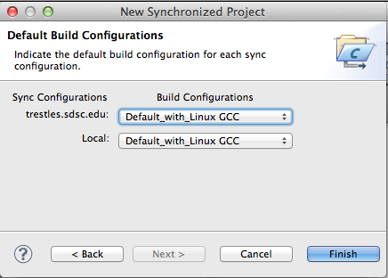
Select Finish to end the New Project Wizard.
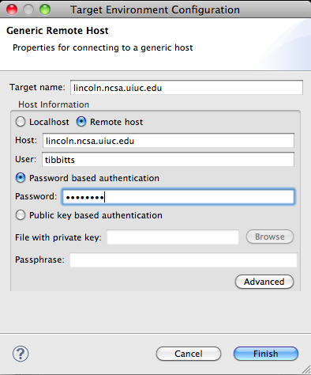
Note: To edit connection information after a connection has been created, e.g. to change user name or password, see Editing Remote Connections in Remote Tools.
The starting configuration will be for one of the remote toolchains. Thus, for the most common case (a single remote site to be modified and built), a synchronized project works out-of-the-box. If the remote location does not exist, it is created. Otherwise, the files in that directory will be synchronized to the local workspace. Edit the files as you would any local project. Each time you save a file, it will be synchronized with the remote system. If you create or delete files, the remote system will be updated appropriately.
By default, a synchronized project is configured to build on the same remote host as for synchronization. To build the project (assuming you have already created a makefile), make sure the project is selected in the Project Explorer view, then click on the build icon (the icon that looks like a hammer). The Console view shows the results of the build.
For more examples of creating and building a simple new Synchronized project, see Introduction to Creating MPI Projects.
For more details see Building Synchronized Projects
Projects can have multiple build configurations. Each build configuration specifies a different set of options for a build. Build configurations and synchronize configurations are independent. A build configuration can be associated with a synchronize configuration, so that it is automatically selected when the synchronize configuration is changed.
For more information on build configurations, sync configurations, etc. see Sync Configurations on the Building Synchronized Projects page.
The sync context menu lets you view or alter several properties related to the sync behavior. To access the sync context menu, right-click on the project in the Project Explorer view and move down to the Synchronize sub-menu.
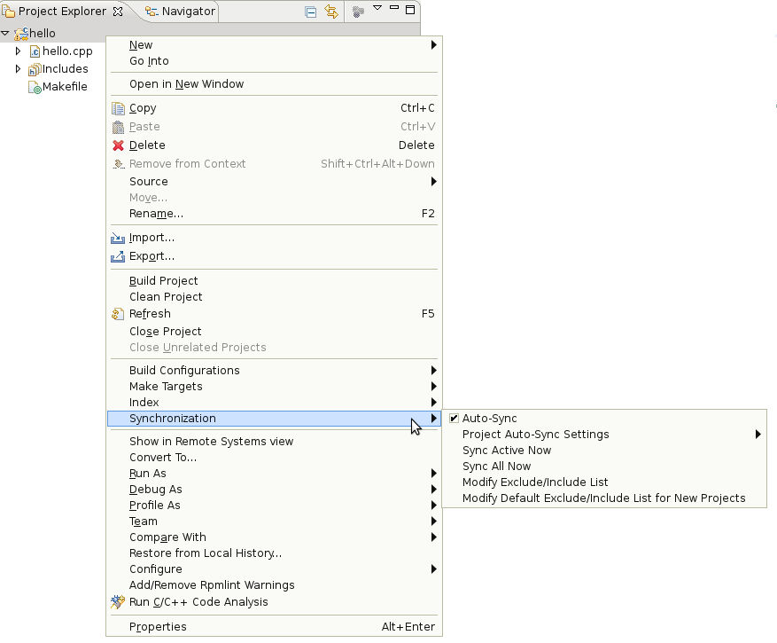
From this menu, you can force a synchronization immediately for the active configuration, Set the active configuration, Manage configurations (sync configurations and their associated build configurations), force a sync of all the configs, etc. Auto-sync (Global) and Auto-sync Settings allow you to alter the behavior of automatic sync'ing for all projects or per project.
Prior to a build, files are always updated with a forced sync of only the active configuration, regardless of any settings. This ensures that the build is based on the latest revisions. Another sync may occur after the build to update files, since the build may alter the remote files during compilation. (This sync, however, does respect the user's settings.) See "File Filtering: Changing which files are synchronized" for information on the "Filter..." option.
By default, all files are usually synchronized.
But some files do not need to be synchronized between local and remote locations. For example, binaries may not be of use on the local machine (and may be large and slow to replicate), but source files usually are since they are usually edited from the local Eclipse workbench but used to build on the remote target system.
From the "Filter..." option of the sync context menu,
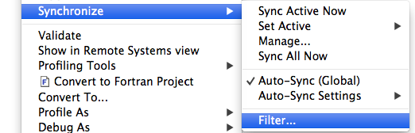
you can change which files are synchronized for the current project. You can also change the default settings for future projects on the Synchronized Project preference page. By default, files and directories specifically used by Eclipse are excluded from synchronization. (Note that these files, such as.project and .project etc. are normally not visible.)
Sync filtering information is accessible in three places:
Parts of the Configure Synchronize Project Filters dialog for an existing project:
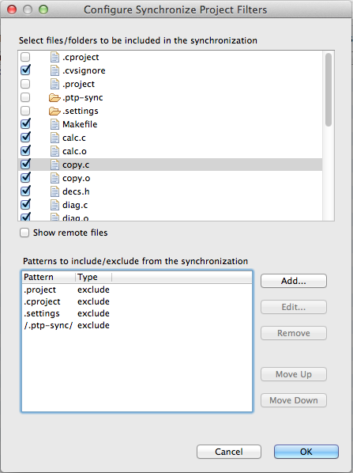
Each part of the dialog updates automatically if the other part is changed, so that they are always in agreement. This allows you to see immediately the effect of adding a new pattern. By default, remote files are not shown. Showing remote files may lead to a slower response time while updating views. Check Show remote files if you wish to view them. An error message is printed if the remote system is disconnected.
You can select or deselect directories or files in the files/folders list, which will add the corresponding exclude or include pattern to the Patterns area. These are "path" patterns, meaning that directories or files in the specified path are excluded or included. In the Patterns area, you can enter paths, regular expressions, and wildcard patterns.
To enter a new pattern, select the Add... button. The Add Pattern dialog appears.
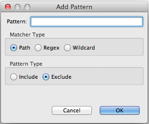
In the Pattern: field, enter a path, a regular expression ("Regex") or a simple Wildcard (e.g. *.o)
that is compared to the project-relative path. Select the radio button beneath the Pattern: field
to indicate the type of pattern.
The regular expression syntax is that of the Java programming language.
An error message is printed if the regular expression is not valid.
Patterns are applied in the order given in the patterns area of the Configure Synchronize Project Filters dialog. New patterns are placed at the top (highest priority). So a file will be excluded or included based on the first matching pattern, or included if no pattern matches. Use the "Move Up" and "Move Down" buttons to change a pattern's priority. If a new pattern is identical to an old pattern and has the same type, the old pattern is removed. Note that it doesn't matter whether the old pattern was an exclude or include pattern, since the new pattern supersedes it.
For example, to exclude *.o files from synchronization
(e.g. they are built on the remote system but you do not want them copied back to the local directory),
Select the Add... button in the patterns area of the Configure Synchronize Project Filters dialog.
Type *.o in the pattern field and select Wildcard for the pattern Matcher type,
and Exclude for the Pattern Type.
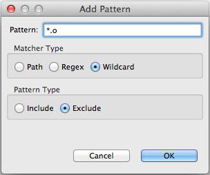
Then select the OK button. The new filter will appear in the patterns area of the
Configure Synchronize Project Filters dialog, and the *.o files are no longer checked
in the files/folders area.
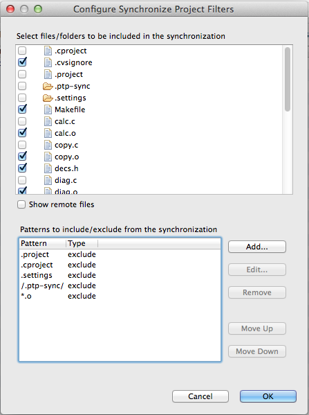
You can move the priority down, edit the pattern, etc. with the buttons.
Hit OK to save any changes you have made to the sync filtering.
The conversion wizard allows you to convert current C/C++ or Fortran projects to synchronized projects. Currently only local projects can be converted. To convert a project, right-click in the Project Explorer view and select New > Other... In the wizard selection dialog, select Remote > Convert to Synchronized Project and select Next>.
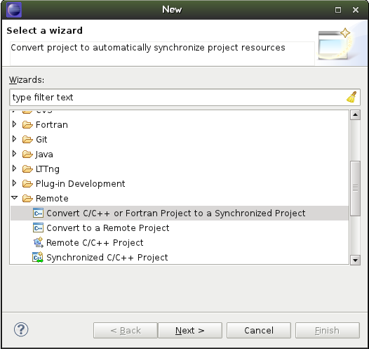
From this dialog, you can select a project to convert.
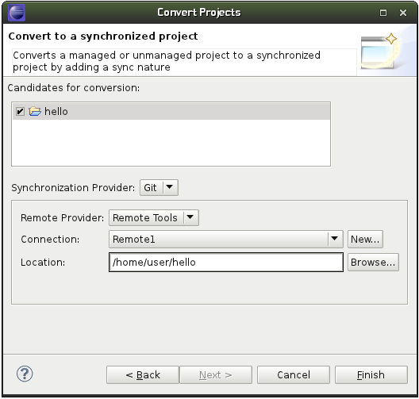
Select a local project to convert it to a synchronized project. Select a connection (or create a new connection.)
Select Next> and in the next dialog, select the Build Configurations for each Sync Configuration to be duplicated on the remote system.
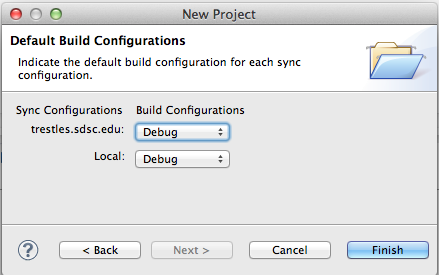
Select Finish and the project is synchronized (copied) to the remote system specified by the connection.
A "merge conflict" can occur, in general, when merging two different versions of a file into a single version. There may be disagreement, for various reasons, on what the final version should be. For synchronized projects, merge conflicts do not occur during normal use, because the underlying system knows that local file changes are updates to older remote versions, or vice versa. Merge conflicts may occur, however, if files are changed both locally and remotely without an intervening sync, because the next sync may not know how to merge the two versions. (It is a good idea to sync after making remote changes before resuming work in Eclipse.) When a conflict is detected, the following dialog appears:
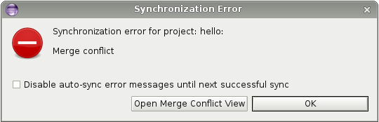
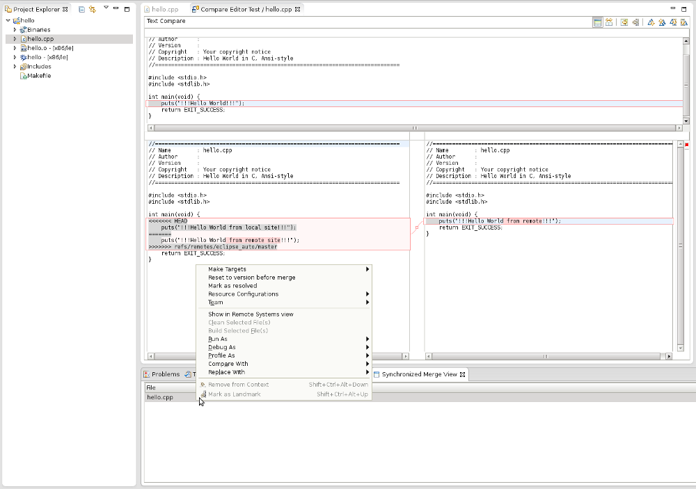
After a merge conflict, the local file has markers and annotation added to show the differing content on the local and remote sites. This is useful for editing the file by itself, but not so much for using the compare editor. Select "Reset to version before merge" in the context menu to revert the local file to its prior version. Now the compare editor will show clearly the differences between local and remote. Sometimes you may simply want the remote version of the file. Selecting "Resolve as remote" makes the local file identical to the remote version and then marks it as resolved.
The elements discovered by scanner discovery are used by the CDT "indexer" and the CDT "Codan (CODe ANalysis)" tool. The former is a potentially long-running tasks that gathers information about all of the source code components (variables, functions, classes, etc.) Codan then uses this information to analyze and potentially markup source files with various bug reports and warnings. Each of these three components, discovery, indexing, and Codan, run independently and at different times. In addition, the build process may produce markings for compiler errors. Codan uses an icon that resembles a bug, which distinguishes it from the more traditional icons used by the build system. (Due to the complexity of analyzing C++, it frequently occurs that programs will compile while still showing Codan markings. This can be due to problems in discovery, indexing, or code analysis.)
Now, make sure that indexing is enabled and invoke a remote build. In order for the build output parser to be useful, builds must produce verbose output. The method for setting up such a build varies per project, but see the Mozilla Project CDT setup page for a good example. Repeat these steps for each remote build configuration. For local configurations, both the standard CDT or new Sync providers should work. If you would like the environment to update automatically when build configurations are switched, go to Project > Properties > C/C++ General > Indexer and select "Use active build configuration" for "Build configuration for the indexer." The downside of this is that the indexer will run each time you switch configurations.
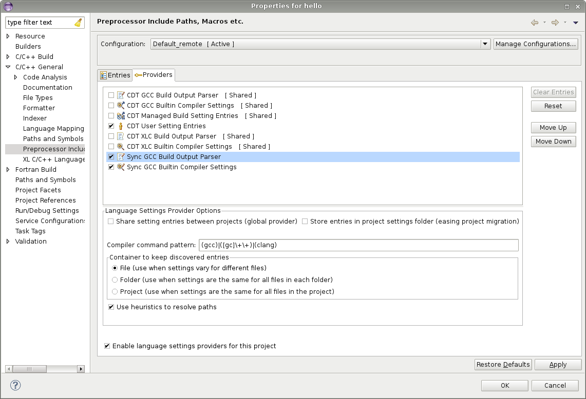
By default, the build output parser discovers entries per file. This can be changed under the provider's tab (see above figure). If discovery is per file, though, the list of includes and macros will be empty if accessed from the project menu or by right-clicking on the project or a folder and selecting "Properties." Instead, right-click on an individual file and select "Properties" to see the entries for that particular file.
The preferences page for Synchronized projects includes setting defaults for sync filtering.
See also PTP Preferences.
See also Synchronized Projects usage info on the PTP Wiki page for more information on synchronized projects.
See Local Vs. Remote Projects for more information on the different kinds of local and remote projects.